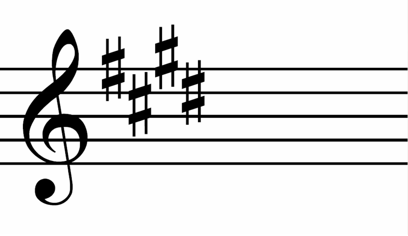

MYS
Minnesota Youth Symphonies is a non-profit organization dedicated to providing quality music education to students in the Minneapolis/St. Paul area. There are four levels: Strings, Philharmonic, Repertory, and Symphony. Strings is an orchestra composed of only stringed instruments, but the other three are full orchestras, meaning they add wind instruments and percussion.

Old violin by Frink51 from commons.wikimedia.org. CC-BY-SA
E major/C sharp minor by Volvo B9TL from commons.wikimedia.org. Public domain.
Click here to visit MYS's website.
Click here to go back to the home page.